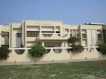
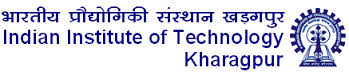
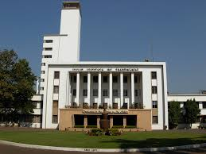

Education is one of the most important aspect in my life.I worked my hardest during school so that I am successful when I grow up.My goal is to be an Independent woman and to reach that goal I need proper schooling.
I gave my intermediate and high school exams from K.U.V. Inter College.
I feel as though my education is what gives me on the right track.I had ambition to get to IIT one day and this ambition helped me to stay focussed and i did very well in school and prepared for JEE and also got selected I feel that this was the best moment of my life.I took admission in Idian Institute of Technology Kharagpur in the department of Electronics and Electrical engineering.
I know that I have got a very good platform.In first year I did not know much about the KGP culture.It was spent in understanding the atmosphere of KGP but know I came to know that here I will get a lot of opportunities to prove my self and to develop my self in every field and thus I will learn to manage my time and yes now I have to work more hardly and it will most definately pay off in the long run.With education I will be the Independent woman I was destined to be.
Here I understood that there is no use and also interest in bookish knowledge.We should be practical in our life. We should not be Maggus but we should be multitasking and the atmosphere of KGP is such that we can develop multi talents in our selves and that is the fact about KGP which I like the most. At the end of my first year I also took part in kshitij(tech fest) web designing team and I have developed a lot of interest in that. I hope that after the end of my college life i will develop all the qualties within my self so that I will be worth to be called an IITian.